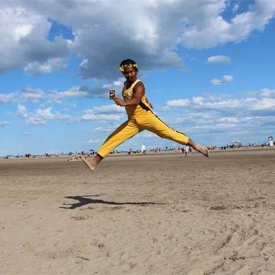
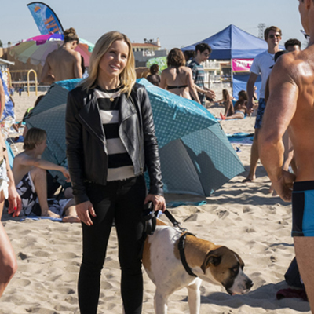

Site Plan
Target Audience and Scenerios
Whether you are planning a trip to the beach, or preparing to scale Mt Everest, it's always good to know what to prepare for weatherwise.

Fred and Wilma have been marred for 25 years. They have a combined annual income of $60k. They have been saving their entire marriage to go on a once in a lifetime vacation. They were generally frugal people and didn't usually splurge like this, but it was time to take that trip. They didn't know about Worldwide Weather Today and planned their trip to the Caribbean during a Hurricane. Their once in a lifetime trip was memorable, but for all the wrong reasons. If only they had known there was a website that could have helped.
Gertrude is approaching 30, is an outdoor enthusiast and enjoys traveling the world. She is sponsored for her travels and is able to plan incredible trips without the worry of costs. She learned about Worldwide Weather Today from a friend when she was planning to summit the highest peaks on every continent. By using the information she received from WWT she was able to plan the perfect time for each climb and successfully achieve her purpose. Without WWT she wouldn't have been able to reach this goal.
Cai is approaching his 40's and is still single. He has a lucrative career in the technology industry but has had little time to travel. He make $250k-400k/year. He has waited his entire life to visit the beach and he was jumping for joy when he logged onto Worldwide Weather Today and not only did it tell him that the weather would be ideal for his trip, but when he arrived he discovered that it had provided an accurate, up to date, informative forecast and he was able to enjoy his day! Cai has planned several more dream trips using WWW Today to find the perfect time to visit each place!
Veronica is in her mid-twenties, single, and is a full time student with no income. She has a full ride scholarship but little to no extra spending money. She had been working on homework all week and didn't realize the weather had changed. She decided to get outside and without checking WWW Today she grabbed her coat and the dogs leash and headed to the beach for a quiet walk. If only she had checked WWW Today she could have grabbed her swimsuit instead of her coat.